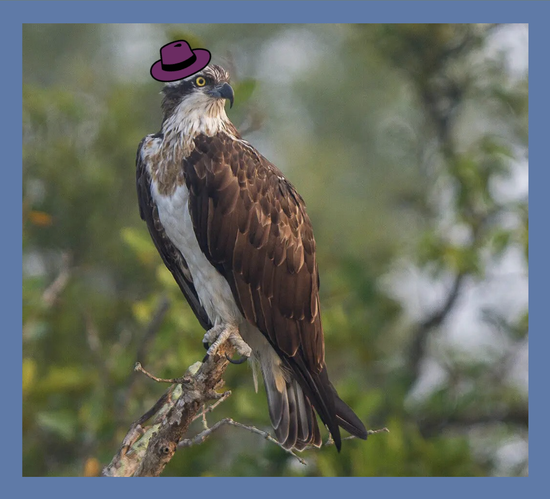

why are you here
how did you find me?
are you stalking me??
"words of great encouragement!"
- rocky, project hail mary \ 🪨 /
/ | \
✧ about me ✧
i am a bird with a hat
i am a human... probably. but you don't know that.
i might be a osprey wearing a fedora.
who gave a bird a hat? and a laptop to make a website?
who knows.
i contain multitudes...

a very accurate representation of me
✧ things i like ✧
- project hail mary
- existence
- birds
- photography
- the tv show silo
- having thumbs
- hog island
- my friends
- airplanes
- coding
- pie
- chai lattes
✧ my pages ✧
✧ cool websites ✧
↓ validate my html/css! ↓